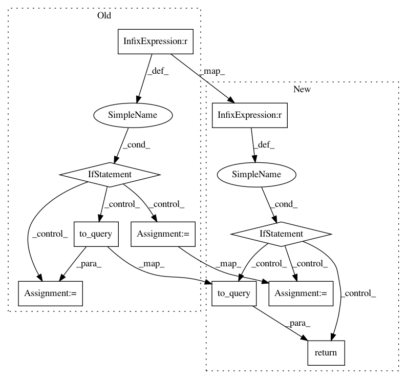

1ea25b4fcd455be8eb03b49a71d3c9434f904e59,prosaic/dogma.py,KeywordRule,to_query,#KeywordRule#,68
Before Change
self.strength = 0
def to_query(self):
if 0 == self.strength:
query = super().to_query()
else:
phrase = choice(self.phrase_cache)
ok_distance = self.max_strength - self.strength
line_no = phrase["line_no"]
query = {"source": phrase["source"],
"$where": self.where_clause_tmpl.format(line_no, ok_distance),}
return query
class FuzzyKeywordRule(KeywordRule):
def to_query(self):
After Change
self.strength = 0
def to_query(self):
if 0 == self.strength:
return super().to_query()
// TODO
raise NotImplementedError()
phrase = choice(self.phrase_cache)
ok_distance = self.max_strength - self.strength
line_no = phrase["line_no"]
query = {"source": phrase["source"],
"$where": self.where_clause_tmpl.format(line_no, ok_distance),}
In pattern: SUPERPATTERN
Frequency: 3
Non-data size: 10
Instances
Project Name: vilmibm/prosaic
Commit Name: 1ea25b4fcd455be8eb03b49a71d3c9434f904e59
Time: 2016-05-04
Author: nathanielksmith@gmail.com
File Name: prosaic/dogma.py
Class Name: KeywordRule
Method Name: to_query
Project Name: vilmibm/prosaic
Commit Name: 1ea25b4fcd455be8eb03b49a71d3c9434f904e59
Time: 2016-05-04
Author: nathanielksmith@gmail.com
File Name: prosaic/dogma.py
Class Name: FuzzyKeywordRule
Method Name: to_query
Project Name: vilmibm/prosaic
Commit Name: 1ea25b4fcd455be8eb03b49a71d3c9434f904e59
Time: 2016-05-04
Author: nathanielksmith@gmail.com
File Name: prosaic/dogma.py
Class Name: SyllableCountRule
Method Name: to_query